library(tidyverse)
library(palmerpenguins)3 Session 3: The layered grammar of graphics
Objectives
- Deepen your understanding of ggplot2. Explore the layered grammar of graphics: how aesthetic mappings, geometric objects, statistical transformations, position adjustments, facets and coordinate systems combine to build complex plots.
- Master aesthetic mappings. Map variables to color, shape, size and alpha correctly. Avoid mapping categorical variables to size or alpha, since it implies a false ordering, and note that mapping a categorical variable to shape uses only six shapes, so additional groups are dropped.
- Understand statistical transformations. Recognize that every geom has a default stat working behind the scenes, and learn when you need to override it.
- Use position adjustments. Choose between stacking, dodging, filling and jittering to keep overlapping bars and points readable.
- Layer multiple geoms. Add multiple geoms to a plot (for example, points and smooth lines) and distinguish between global and local aesthetic mappings. Use the
groupaesthetic to draw separate curves for each category. - Use faceting and coordinate systems. Split data into panels using
facet_wrap()orfacet_grid()and adjust scales. Experiment with coordinate transforms such ascoord_flip()andcoord_polar(). - Read layered plots critically. Facets and stacked bars can be just as easy to misread as the plots from last session; you will learn a few specific ways they go wrong.
Notes
The layered grammar, formalized
Every ggplot2 plot is built from up to seven pieces, most of which have sensible defaults so you rarely have to specify all of them:
ggplot(data) +
geom_function(mapping = aes(...), stat = ..., position = ...) +
coordinate_function() +
facet_function()You have already used data, mapping, and a geom_function. Today adds the remaining three ingredients: the stat (statistical transformation) each geom uses behind the scenes, the position adjustment that resolves overlapping marks, and the coordinate and facet functions that reshape how the whole plot is laid out. Once you can name all seven pieces of a plot, you can describe (and build) essentially any static chart.
Aesthetic mappings: what should and shouldn’t be mapped
The aes() function connects variables to graphical attributes, but not every variable and property combination is a good idea. Mapping a categorical variable to color is generally safe. Mapping it to shape works, but only six shapes are built in by default, so a seventh category has nowhere to go. Mapping a categorical variable to size or alpha is actively discouraged, since size and transparency naturally suggest an ordered, numeric scale, and ggplot2 will warn you when you try it.
# mapping species to color and shape is safe here (3 categories, well under the limit of 6)
ggplot(penguins, aes(x = flipper_length_mm, y = body_mass_g, color = species, shape = species)) +
geom_point()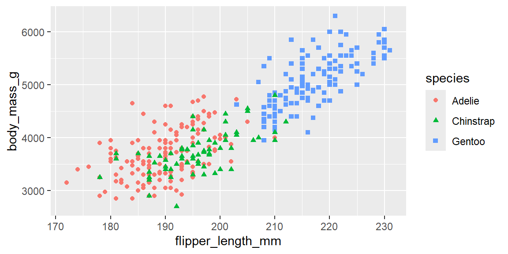
# mapping a categorical variable to size implies an ordering that doesn't exist
ggplot(penguins, aes(x = flipper_length_mm, y = body_mass_g, size = species)) +
geom_point()Warning: Using size for a discrete variable is not advised.Warning: Removed 2 rows containing missing values or values outside the scale range
(`geom_point()`).
WarningA warning is not a suggestion
When ggplot2 tells you “using size for a discrete variable is not advised,” it is not being fussy. Readers naturally interpret bigger as more, so sizing points by an unordered category (like species) invites viewers to draw a ranking that isn’t in the data at all. Treat this particular warning as something to fix, not silence.
Global versus local mappings, and layering geoms
Mappings defined inside ggplot() apply globally to every layer; mappings placed inside a specific geom apply only to that layer and override the global mapping for that property.
# global mapping: color applies to both the points and the smooth line
ggplot(penguins, aes(x = flipper_length_mm, y = body_mass_g, color = species)) +
geom_point() +
geom_smooth(method = "loess", se = FALSE)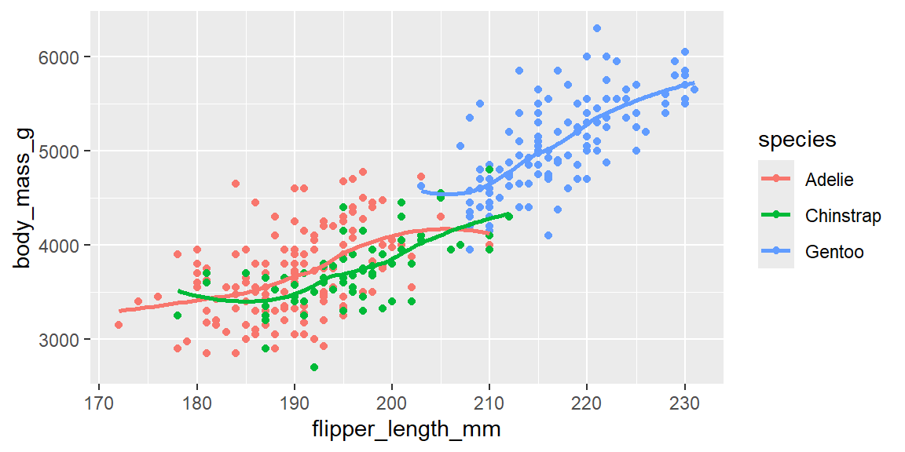
# local mapping: color applies only to the point layer; one smooth line covers everybody
ggplot(penguins, aes(x = flipper_length_mm, y = body_mass_g)) +
geom_point(aes(color = species)) +
geom_smooth(method = "loess", se = FALSE)
Different geoms draw different kinds of marks from the same data, and overlaying several of them in one plot can reveal aspects that no single geom shows on its own. When a geom like geom_smooth() sees a discrete aesthetic (such as color), it automatically groups the data and fits one curve per group; you can also set the group aesthetic explicitly if you want grouping without also changing the plot’s color or shape.
# one curve per species, drawn explicitly with the group aesthetic
ggplot(penguins, aes(x = flipper_length_mm, y = body_mass_g)) +
geom_point(aes(color = species)) +
geom_smooth(aes(group = species), method = "loess", se = FALSE)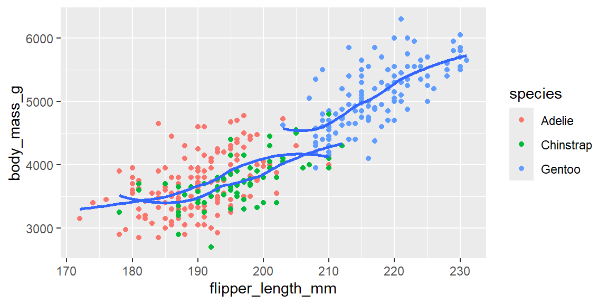
Statistical transformations
Every geom pairs with a default stat, an algorithm that computes the values actually plotted. geom_point() plots your data exactly as given (its default stat is "identity"), but geom_bar() does not plot raw rows at all: its default stat, stat_count(), first counts how many rows fall into each category, and only then draws bars proportional to those counts.
# under the hood, this counts rows per species before drawing anything
ggplot(penguins, aes(x = species)) +
geom_bar()
Because the stat and the geom are separate pieces, you can pair a geom with a different stat than its default, or reach for stat_summary() when you want a geom to plot a computed summary (like a mean) rather than raw counts or raw values.
ggplot(penguins, aes(x = species, y = body_mass_g)) +
stat_summary(fun.min = min, fun.max = max, fun = mean)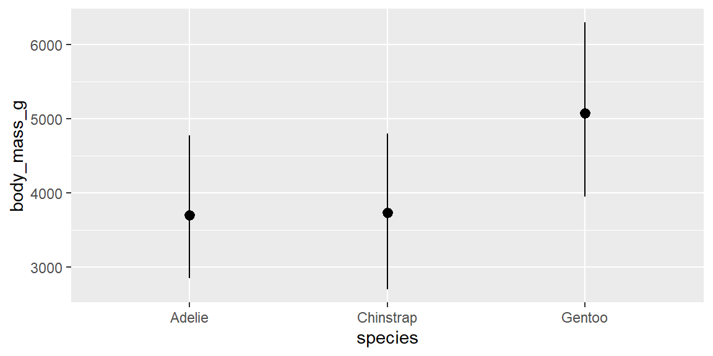
NoteEvery geom has a default stat, and every stat has a default geom
You rarely need to think about stats when you’re using geom_point(), geom_line(), or geom_boxplot(), because their default stat is simply “use the data as given.” Bar charts and histograms are the main place beginners run into stats directly, precisely because their defaults quietly count or bin your data before drawing anything.
Position adjustments
When marks would otherwise overlap, ggplot2’s position argument controls how they are nudged apart. Bar charts default to position = "stack", piling groups on top of each other; position = "fill" rescales stacks to a constant height so you can compare proportions; position = "dodge" places groups side by side instead of stacking them; and position = "jitter" (equivalent to geom_jitter()) adds small random noise to scatterplot points so overlapping observations become visible.
# stacked (default): totals are easy to read, but comparing groups within each bar is hard
ggplot(penguins, aes(x = island, fill = species)) +
geom_bar()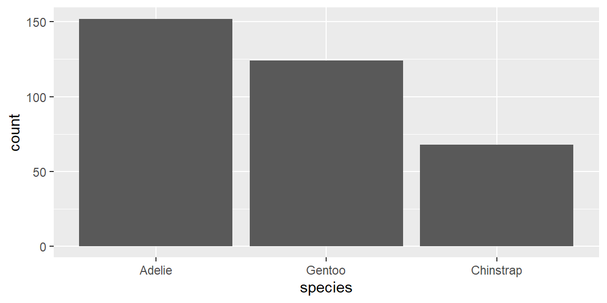
# dodged: groups sit side by side, easier to compare directly, harder to see the total
ggplot(penguins, aes(x = island, fill = species)) +
geom_bar(position = "dodge")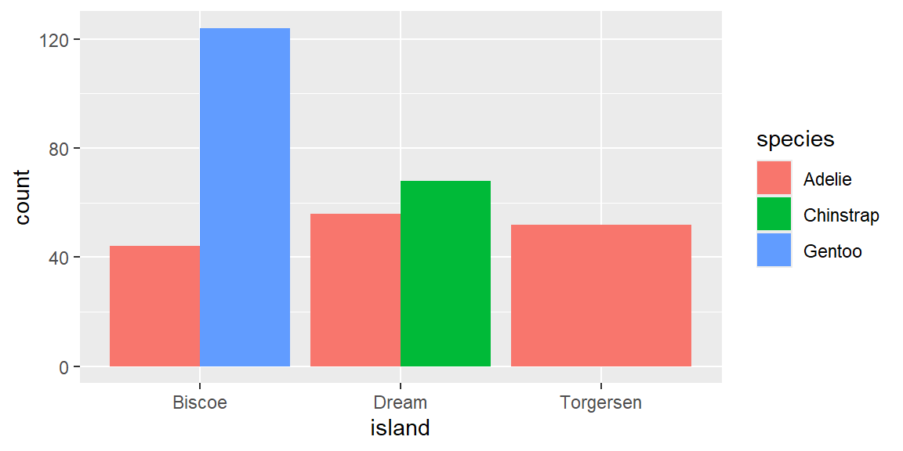
Facets
Use facet_wrap() to create a grid of subplots for one categorical variable, and facet_grid() for two variables at once (rows ~ columns). By default every panel shares the same x and y scales, which is usually what you want for a fair comparison; set scales = "free_y", "free_x", or "free" if you need each panel to scale independently.
# facet by island
ggplot(penguins, aes(x = body_mass_g, y = flipper_length_mm)) +
geom_point() +
facet_wrap(~island)
# facet by species and sex at once, letting the y-axis vary by row
ggplot(penguins, aes(x = flipper_length_mm, y = body_mass_g)) +
geom_point() +
facet_grid(species ~ sex, scales = "free_y")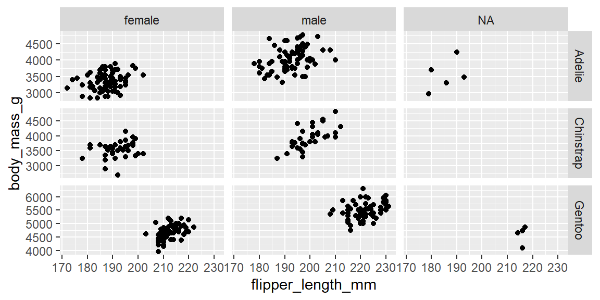
Coordinate systems
Transforming the coordinate system can make a plot easier to read without changing the underlying geoms or data. coord_flip() swaps the x and y axes after everything else has been computed, which is handy for long category labels; coord_polar() bends the plotting area into a circle, turning a stacked bar chart into a pie or Coxcomb chart; coord_fixed() locks the ratio between one unit on x and one unit on y, which matters whenever the physical aspect ratio carries meaning (such as a map).
# flip axes so long category labels read left to right instead of being squeezed
ggplot(penguins, aes(x = species, y = body_mass_g)) +
geom_boxplot() +
coord_flip()
# polar coordinates turn a stacked bar into a pie chart
ggplot(penguins, aes(x = "", fill = species)) +
geom_bar() +
coord_polar(theta = "y")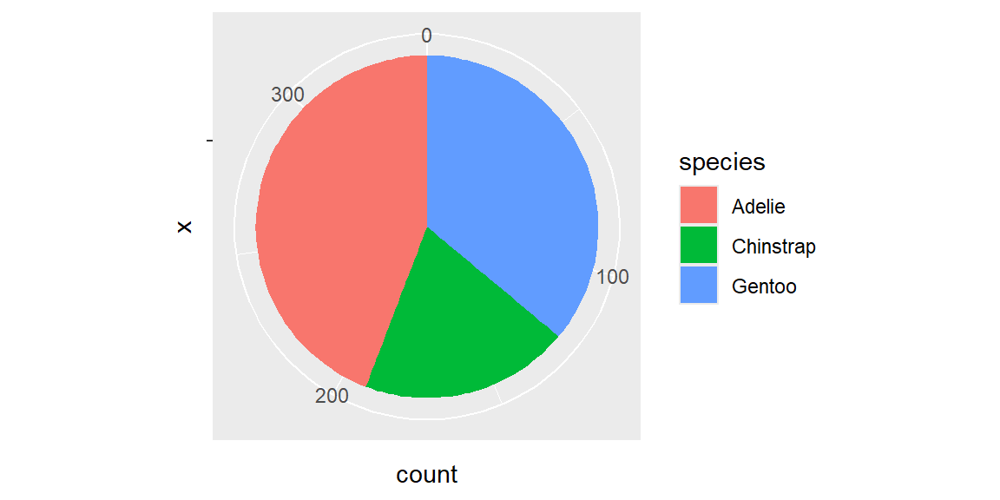
Fringe cases and common pitfalls
ExampleExample 3.1
Mapping too many categories to shape drops data, quietly.
The mpg dataset (built into ggplot2) has a class column with seven distinct vehicle types, one more than the six shapes ggplot2 has on hand by default:
n_distinct(mpg$class) # how many categories are we asking ggplot2 to draw?[1] 7ggplot(mpg, aes(x = displ, y = hwy, shape = class)) +
geom_point()Warning: The shape palette can deal with a maximum of 6 discrete values because more
than 6 becomes difficult to discriminate
ℹ you have requested 7 values. Consider specifying shapes manually if you need
that many of them.Warning: Removed 62 rows containing missing values or values outside the scale range
(`geom_point()`).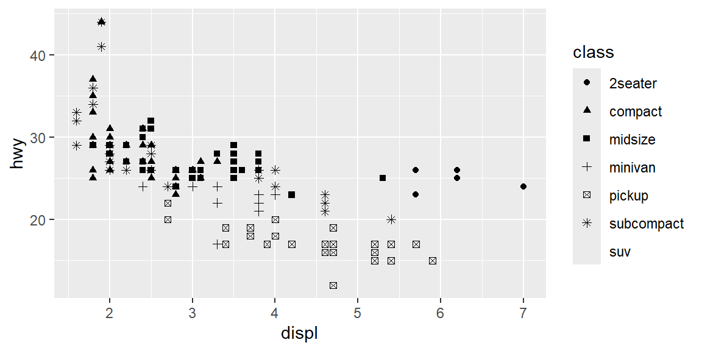
R produces two warnings above, not one. The first explains that the shape palette tops out at six discrete values, and the second reports that rows were removed for having a missing shape. Every vehicle in the seventh category is silently dropped from the plot entirely, the same way rows with a genuine NA were dropped in Session 2, except here the “missing” data was never actually missing. Whenever you map a categorical variable to shape, check n_distinct() first.
ExampleExample 3.2
A stat mismatch can produce an error instead of a plot.
Suppose you first summarize your data yourself, the way you will learn to do properly next session:
stress <- read_csv("data/student_stress_survey.csv")
major_counts <- stress |> count(major)
major_counts# A tibble: 5 × 2
major n
<chr> <int>
1 Biology 43
2 Business 44
3 Engineering 56
4 Nursing 50
5 Psychology 57You now have one row per major with the count already computed in a column called n. It is tempting to hand this straight to geom_bar():
ggplot(major_counts, aes(x = major, y = n)) +
geom_bar()Error in `geom_bar()`:
! Problem while computing stat.
ℹ Error occurred in the 1st layer.
Caused by error in `setup_params()`:
! `stat_count()` must only have an x or y aesthetic.This fails with “stat_count() must only have an x or y aesthetic” because geom_bar()’s default stat, stat_count(), expects to do its own counting from raw, one-row-per-observation data. It does not know what to do with a y aesthetic that is already a count. The fix is either geom_col(), which is built for exactly this situation (it defaults to stat = "identity"), or geom_bar(stat = "identity"):
ggplot(major_counts, aes(x = major, y = n)) +
geom_col()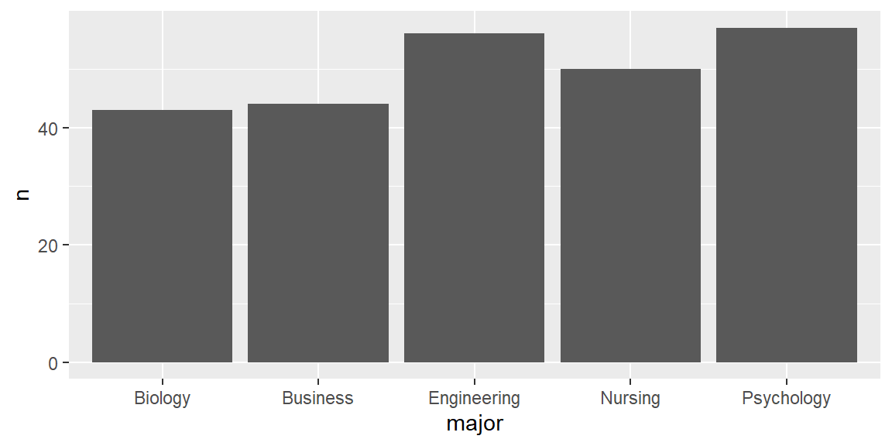
If you ever see “stat_count() must only have an x or y aesthetic,” the fix is almost always to switch from geom_bar() to geom_col().
ExampleExample 3.3
position = "identity" can make one group hide another entirely.
"identity" is the position adjustment that does nothing: every group is drawn exactly where its own values say to draw it, with no stacking, filling, or dodging to keep groups apart. For bars and histograms, that means overlapping groups are drawn right on top of one another.
stress <- read_csv("data/student_stress_survey.csv")
two_majors <- stress |> filter(major %in% c("Engineering", "Nursing"))
ggplot(two_majors, aes(x = study_hours, fill = major)) +
geom_histogram(position = "identity", binwidth = 2)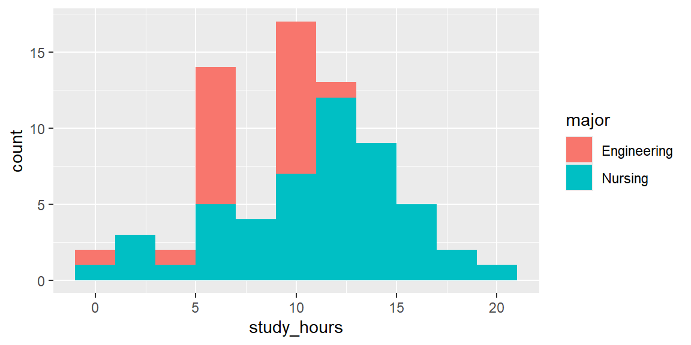
Wherever the two majors’ bins overlap, whichever group ggplot2 happens to draw last simply paints over the other, so you cannot tell from this plot alone how much of the shorter bar is actually hidden behind the taller one. Setting alpha below 1 makes both groups partially see-through, so overlapping regions blend instead of one erasing the other:
ggplot(two_majors, aes(x = study_hours, fill = major)) +
geom_histogram(position = "identity", binwidth = 2, alpha = 0.5)
Whenever you overlay two or more groups with position = "identity", whether it’s bars, histograms, or density curves, add transparency, or you may be quietly hiding exactly the comparison you were trying to show.
ExampleExample 3.4
Free facet scales make every panel look equally important, even when the underlying numbers are wildly different.
# fixed scales (default): every panel uses the same y-axis, so bar heights are directly comparable
ggplot(penguins, aes(x = sex)) +
geom_bar() +
facet_wrap(~species)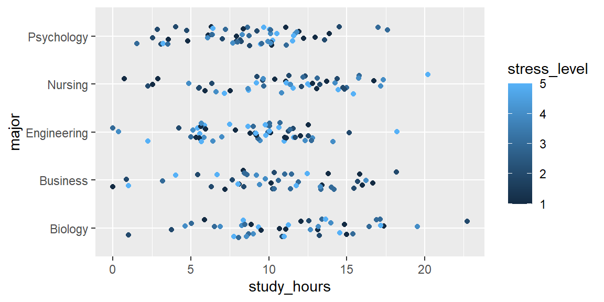
# free scales: each panel gets its own y-axis, so every bar looks similarly tall
ggplot(penguins, aes(x = sex)) +
geom_bar() +
facet_wrap(~species, scales = "free_y")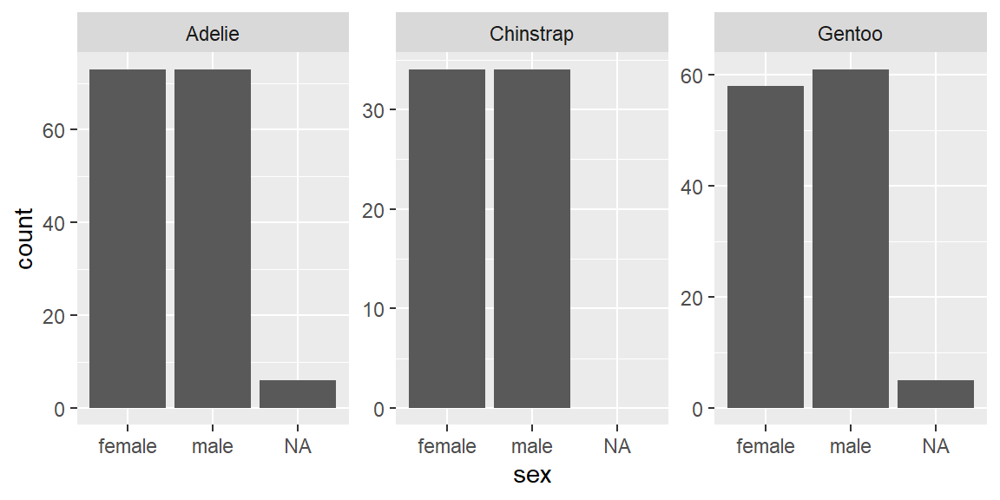
With scales = "free_y", a species with 20 penguins and a species with 150 penguins can produce bars of roughly the same visual height, because each panel is scaled independently to fill the available space. Free scales are genuinely useful when panels measure fundamentally different quantities, but when panels represent comparable counts, free scales can erase exactly the comparison a reader most wants to make. Default to fixed scales unless you have a specific reason to free them, and say so explicitly when you do.
Recap
| Term | Definition |
|---|---|
| Layered grammar template | ggplot(data) + geom_function(mapping, stat, position) + coordinate_function() + facet_function(). |
| Stat (statistical transformation) | The algorithm a geom uses to compute the values it actually plots; geom_bar()’s default stat counts rows per category. |
geom_col() |
Like geom_bar(), but expects the bar heights to already be computed, using stat = "identity" by default. |
| Position adjustment | How overlapping marks are resolved: "stack" (default for bars), "fill" (proportions), "dodge" (side by side), or "jitter" (random noise for points). |
group aesthetic |
Tells ggplot2 to treat rows as separate groups (for example, one smoothing curve per group) without also mapping color or shape. |
facet_wrap() / facet_grid() |
Split a plot into a grid of subplots by one variable, or by two variables at once. |
| Free scales | scales = "free_x", "free_y", or "free" let each facet panel use its own axis range, which can hide real differences in magnitude between panels. |
coord_flip() |
Swaps the x and y axes after the plot has otherwise been computed. |
coord_polar() |
Bends the plotting area into a circle, turning a stacked bar into a pie or Coxcomb chart. |
coord_fixed() |
Locks the ratio between one x unit and one y unit, useful whenever physical aspect ratio matters. |
Check your understanding
NoteProblems
- Name the seven pieces of the layered grammar template, and identify which ones have sensible defaults you rarely need to change.
- You map a variable with nine categories to
shapein a scatterplot. What will happen to the categories beyond the sixth, and how would you find out ahead of time how many categories you are dealing with? - You already have a small data frame with one row per department and a column called
total_sales. Your first attempt,ggplot(df, aes(x = department, y = total_sales)) + geom_bar(), produces an error. Explain the error and give two ways to fix it. - A classmate overlays two groups’ histograms with
geom_histogram(position = "identity")and noalpha. Explain what is happening visually, and why the plot might understate how much data is really there for one of the groups. - A colleague facets a bar chart of monthly sales by store, using
scales = "free_y", and claims every store had “about the same” sales. What should you check before accepting that conclusion?
TipSolutions
The seven pieces are data, the aesthetic mapping, the geom function, the stat, the position adjustment, the coordinate function, and the facet function. Data, mapping, and geom are the three you set explicitly on day one; stat, position, coordinate (Cartesian), and facet (none) all have sensible defaults that most plots never need to override.
The seventh, eighth, and ninth categories will have no shape to draw with, so ggplot2 issues a warning (“the shape palette can deal with a maximum of 6 discrete values”) and drops those rows from the plot entirely, with a second warning about removed rows. Running
n_distinct(df$variable)(orlength(unique(df$variable))) before plotting tells you how many categories you are working with, so you can choose a different aesthetic (like color, or faceting) instead of shape.geom_bar()’s default stat,stat_count(), expects to count raw rows itself and does not know what to do with ayaesthetic that is already a precomputed total. The fix is to usegeom_col()instead ofgeom_bar(), or to keepgeom_bar()but addstat = "identity".With
position = "identity", ggplot2 draws each group’s bars exactly where its own counts say to, without stacking or otherwise nudging groups apart, so wherever the two groups’ bins overlap, whichever group is drawn last simply paints over the other. If the hidden group actually has a similar or larger count in that bin, the plot can make it look like there is little or no data there for that group. Addingalphabelow 1 (for example,alpha = 0.5) makes both groups partially see-through, so overlapping regions blend together instead of one group erasing the other.Check whether the y-axis is actually the same across panels. With
scales = "free_y", each facet panel is scaled independently to fill the available space, so a store with very low sales and a store with very high sales can produce visually similar-looking bars. Re-plot with the default fixed scales (orscales = "fixed") and compare; only then can you fairly judge whether the stores really did have similar sales.